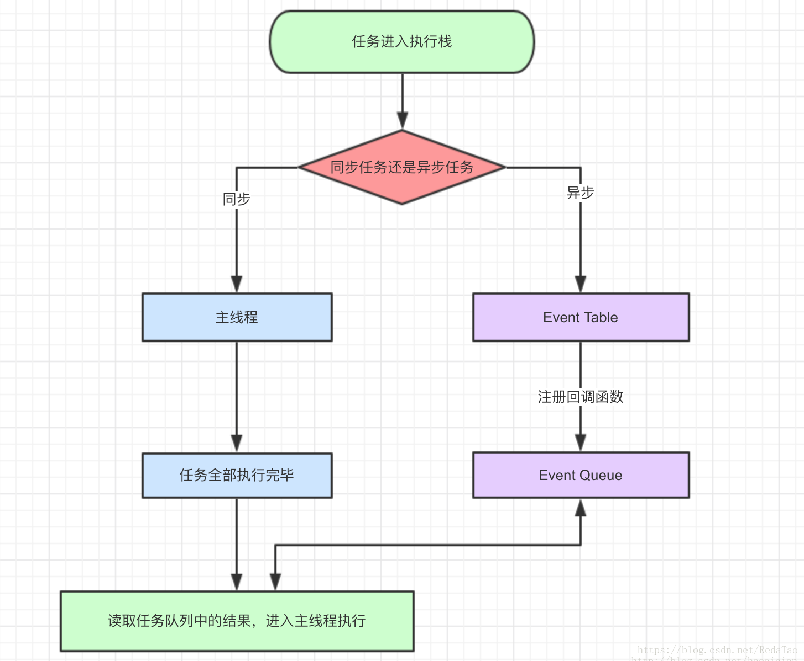
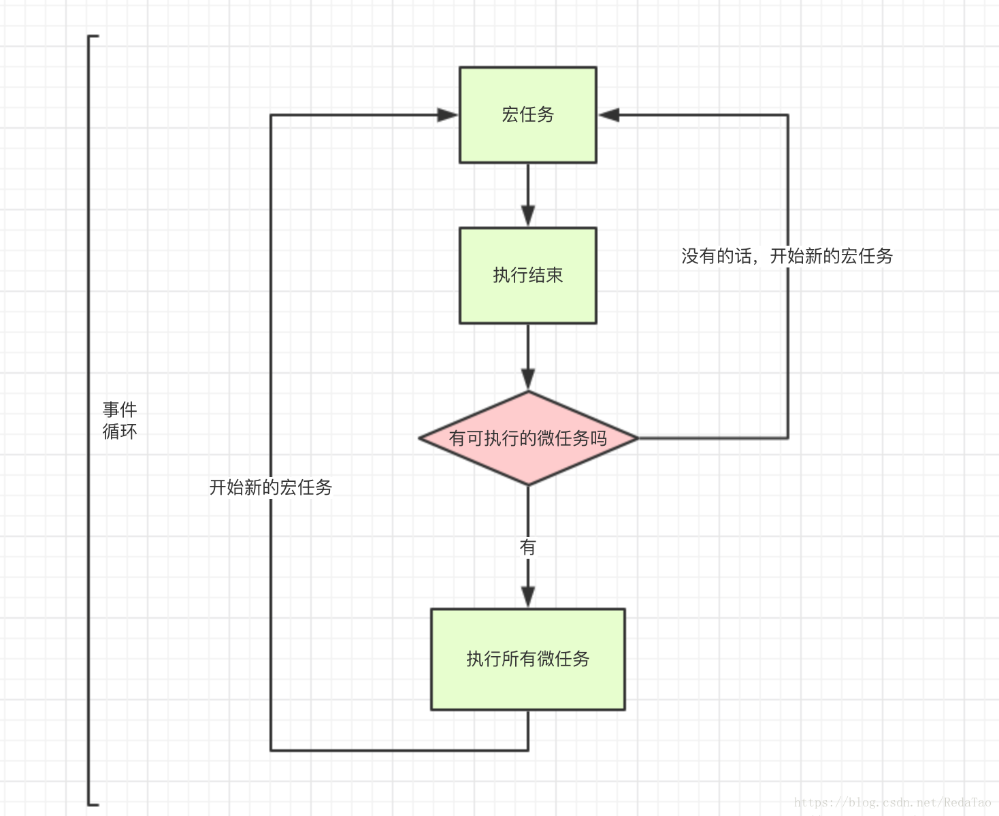

先以一道面试题做引子：
写出这段程序的输出内容：
setTimeout(function(){
console.log(1);
},0);
new Promise(function(a,b){
console.log(2);
for(var i=0;i<10;i++){
i==9&&a();
}
console.log(3)
}).then(function(){
console.log(4)
});
console.log(5);如果你看了这道题不知道怎么下手，或者发现结果和自己的答案大相径庭，请继续往下看
1. javascript事件循环
首先，你要知道javascript是单线程语言。js任务需要排队顺序执行，如果一个任务耗时过长，后边一个任务也的等着，但是，假如我们需要浏览新闻，但新闻包含的超清图片加载很慢，总不能网页一直卡着直到图片完全出来，所以将任务设计成了两类：
同步任务
异步任务
当我们打开网站时，网页的渲染过程就是一大堆同步任务，像页面骨架和页面元素的渲染，而加载图片、音乐之类的任务就是异步任务，看一下下边导图：
如图：

同步和异步任务分别进入不同的执行“场所”，同步进入主线程，异步进入Event Table并注册函数。当指定的事情完成时，Event Table会将这个函数移入Event Queue。主线程内的任务执行完毕为空，回去了Event Queue读取对应的函数，进入主线程。
上述过程会不断重复，也就是常说的Event Loop（事件循环）。
但是，JS异步还有一个机制，就是遇到宏任务，先执行宏任务，将宏任务放入event queue，然后再执行微任务，将微任务放入eventqueue，但是，这两个queue不是一个queue。当你往外拿的时候先从微任务里拿这个回调函数，然后再从宏任务的queue拿宏任务的回调函数，如下图：

宏任务一般包括：整体代码script，setTimeout，setInterval。
微任务：Promise，process.nextTick
参考文章： Javascript执行机制